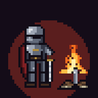

Фитнес-RPG: отжимания, приседания и «звёздочка» управляют боем и прокачкой.
Загрузка…
Совет: поставьте телефон на пол у стены и отойдите на 2–3 м.
Добавьте игру на главный экран: Safari → «Поделиться» → «На экран Домой»;
Chrome → ⋮ → «Установить приложение».